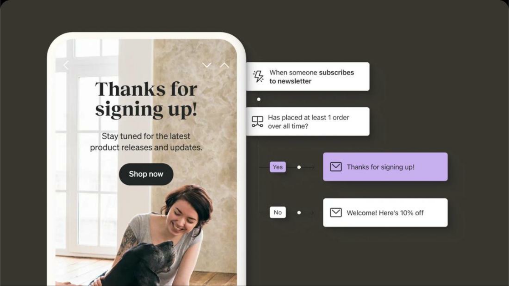
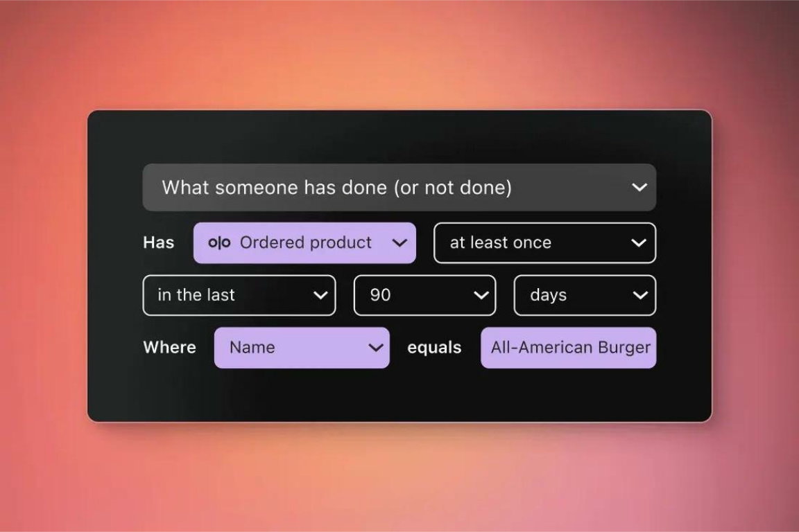
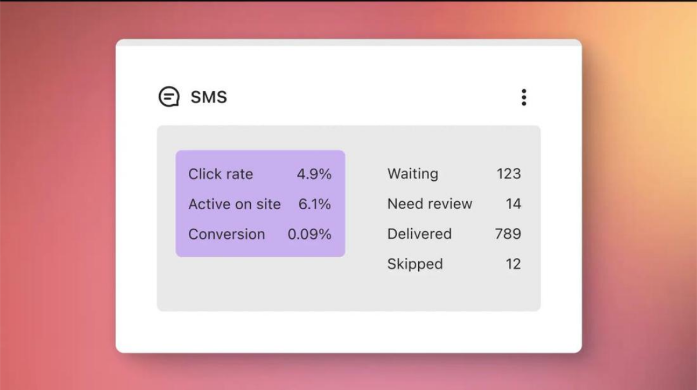

Klaviyo Review: The Best Email Machine in Ecommerce, Priced Like It Knows It
Weighing it against the calmer alternative? Our Kit vs Klaviyo comparison ran the same list on both.
6.9 Sensible Score, out of 10
Ratings by business type
Best suited to: online sellers whose email has to earn, with the list size and revenue to feed the machine. Weakest for pre-revenue lists and creators, who pay ecommerce prices for depth they will rarely touch.
Scored on our ten metric Sensible Score. See How We Rate for the method and what each number means.
Sensible Stack: Streamlining business, whatever your size
The short answer
Most email tools send email. Klaviyo studies your customers. It connects to your shop, watches what people view, abandon and buy, and turns that into flows and segments that a general email platform cannot build, because it never sees the data. For a selling business, that difference is money. The price of the machine is the machine's pricing: since February 2025 Klaviyo bills on active profiles, every contact in the account who can be emailed, including people who left an address at your checkout and never opted in to anything. Your list grows your bill even on the months you barely send. We know both sides of this from the inside, which is more than most reviews of Klaviyo can say: we were customers for a long stretch, and then, in November 2026, we were not.
What it is
Klaviyo is an ecommerce marketing platform built around a customer database. The core is email: campaigns, and flows, the automated sequences triggered by behaviour, abandoned cart, browse abandonment, post purchase, winback, welcome. Around the core sits a wider platform we will be honest about not using: SMS and mobile push in the same account, a Reviews product for collecting product reviews, a data platform (their CDP) with predictive analytics such as customer lifetime value and churn risk, paid Marketing Analytics on top, and AI tools that draft campaigns and flows. This review scores the email core we ran for a long stretch. The wider platform is described so you know it exists, and it is one reason Feature depth scores 9: even a busy account uses a fraction of what is in the building.
What we actually ran on it
Our list belonged to a small ecommerce brand selling a physical product: about 2,000 subscribers when we left, built through launches and a shop on Shopify. Four parts of Klaviyo earned their keep, month after month.
The flows, and the data on them. We built a six email welcome flow that told the brand's story across the first days after signup and kept subscribers engaged while the product itself was still in development, with nothing yet to buy. Klaviyo reports on flows and campaigns as a matter of course, so the argument about whether email was working was never an argument: the numbers were on the screen, per send, per flow, per segment, opens, clicks and replies in our case. For stores that are selling, the same reporting extends to revenue per flow and per campaign. That reporting changes how you write. You stop guessing which subject lines and stories land, because the platform shows you. The working method was the loop that reporting makes easy: check the metrics on each send, keep the angle that held attention, rewrite the one that did not, and let the next email inherit the lesson.
What the metrics actually said. Across the twelve months to November 2026 the flow delivered about 7,350 emails, and the weighted open rate across the six sends was 43.9%. Opens ran 47.1% on the first email, dipped to 38.2% on the third, a founder story, then climbed instead of fading: 40.3%, 44.5%, and 60.8% on the last, a production notes email sent to the subscribers who had stayed the course. No platform publishes a watch-only flow benchmark, so the honest peer set is the watch-adjacent categories. Klaviyo's own 2026 tables put Jewellery flows at 32.8% opens and 5.42% clicks, which means every email in this sequence opened above the category flow average. Bloomreach's Jewellery, Eyewear & Watches figures are tougher: 46.9% unique opens and 1.7% unique clicks across email, so the flow sits a little under that open mark overall, with the first and last emails above it. Omnisend's welcome automations, a different platform entirely, average 35.5% opens and 3.94% clicks: the opens here beat that comfortably, while the clicks only roughly match it because one email did the heavy lifting. Position by position is the fairest read. Published welcome curves usually start much higher than 47.1% on email one, then decay toward the low twenties by email five. This one started softer than the textbook opener and finished far stronger than the textbook ending. Clicks told the sharper story. The story emails clicked at 0.3% to 0.6%, low against any flow benchmark and exactly what a list with nothing to buy looks like. The reveal email, the send that finally showed the product, clicked at 20.1%, above even Klaviyo's 2026 all-industry top 10% flow click rate, and 20.4% of its recipients went on to visit the site. That split is the working knowledge the reporting bought us: story held attention, product moved people, and later copy was refined around that order, which is why the opens climb through the back half of the sequence instead of dying away.

Segmentation that thinks in purchases. Lists are the blunt instrument; segments are the craft. Klaviyo slices by what people bought, when, how often and what they nearly bought, combined any way you like. We ran a product vote through it, asking subscribers to choose between options, and segmented the voters by their choice, so each group could later be emailed about the thing they had personally picked. A general email tool can tag a click. Klaviyo already knows the customer's whole history with your shop, and the segment builder treats that history as raw material.

The branding import. Point Klaviyo at your shop and it pulls your branding, logos, colours, fonts, product catalogue, and then suggests emails built from them: campaign drafts and flow content that arrive looking like your business rather than a template farm. Starting from a suggested, on-brand draft is a different morning from starting from a blank page, and for a small team it is the difference between sending this week and meaning to.
The Shopify link. Of everything in this review, this is the part other platforms should study. The integration is deep and two way: products, orders, browsing and checkout behaviour flow in, and the shop is simply there inside your email tool, current, without exports, imports or sync rituals. Setup effort scores 8 largely because of this connection. If your shop is on Shopify, Klaviyo feels less like an integration and more like an organ of the shop itself.
Why we left
Not because it failed. Our combined email and messaging bill reached $75 a month at roughly 2,000 subscribers, and the brand behind the list was pre-revenue: depth we had built and admired was depth we were no longer using every month, while the meter ran on profiles, not on sends. The product behind the list is in development, and a business earns nothing during that process, so in November 2026 we moved the list into Shopify's own email tool and cancelled Klaviyo at the end of its billing cycle, until the point where the brand is selling online. Exit scores 7 because the leaving was clean: lists and segments export properly, and the rebuild elsewhere was a weekend, though flows and their history do not travel and were rebuilt from scratch. The honest summary is that Klaviyo was the right tool at the wrong stage. Once the same list is attached to a product that is actually selling online, the bill becomes the easiest money in the budget, and Klaviyo is the natural home to return to. At pre-revenue, it was a Rolls-Royce on a learner's permit, and we have scored Pricing fairness as you grow at 3 so that nobody mistakes our affection for the product for affection for its pricing model.
Where it wins
- Ecommerce flows are the category benchmark: welcome, abandoned cart, browse abandonment, post purchase and winback, triggered by real shop behaviour rather than timers and hope
- Revenue reporting per campaign, per flow and per segment turns email from a faith position into an accounted one
- Segmentation by buying behaviour is deeper than anything else we have used, and the builder makes that depth usable rather than theoretical
- The brand import and suggested emails remove the blank page problem entirely for small teams
- The Shopify integration is the best we have seen between any two tools in this index: deep, two way, and effectively invisible once connected
- The free plan is real, up to 250 profiles, which is enough to learn the platform properly before the meter starts

Where it frustrates
- Active profile billing. Since February 2025 you pay for every emailable profile in the account, including checkout addresses that never opted in. List hygiene stops being good practice and becomes a finance task, and the tier moves up automatically as you grow
- The depth invites overbuilding. A solo operator can spend a month constructing flows they then have to maintain, on a list that needed four emails and a welcome sequence
- The platform keeps widening, SMS, reviews, data platform, analytics, AI, and the add-ons are priced like separate products, Marketing Analytics from $100 a month and the data platform from $500. The email bill is the floor, not the ceiling
- It is wasted on non-ecommerce lists. Creators and newsletter businesses pay for shop data machinery they will never switch on, which is why Creator scores 5 here
- Support, in our long stretch, was never needed for a rescue, so our 6 reflects the documentation and the product's own guidance rather than a tested emergency service
Pricing, and how the meter runs
Prices checked against Klaviyo's pricing and published tier tables in November 2026. The free plan covers 250 active profiles and 500 sends a month. Paid email plans run about $20 a month at 500 profiles, $30 at 1,000, $60 at 2,500, $100 at 5,000, $150 at 10,000, $400 at 25,000 and $720 at 50,000, with monthly sends capped at roughly ten times your profile count. Adding SMS costs about $15 a month more at each tier, with message credits on top. There is no annual discount to soften it: monthly and annual cost the same. Two mechanics matter more than any single figure. First, the unit is the active profile, not the subscriber you email, so an old, cold or imported list costs money every month it sits there. Second, tiers move automatically: cross a boundary mid month and the plan follows your list, not your intentions. Our own $75 a month at about 2,000 subscribers, email and messaging combined, is what that arithmetic feels like from the inside. The same list on the free-until-10,000 model of a creator tool costs nothing at all, which is the comparison our Kit vs Klaviyo head to head works through at several list sizes.
Try it:
Visit KlaviyoWho it suits, and who should skip it
Suit it if you sell online and email is expected to earn: a shop on Shopify with real order flow, a list in the thousands, and products people buy more than once. There, Klaviyo is not an expense line, it is the till's best friend, and Online seller scores 9 without hesitation. Skip it if you are pre-revenue, building an audience rather than a customer base, or publishing a newsletter: the creator tools are calmer, cheaper for far longer, and honest about what they count. And if you are where we were, a small brand with a real list and no revenue yet, the lesson of this review is timing, not verdict. Klaviyo will still be there, and still be excellent, when the list starts paying for itself.
Research note: prices and plan mechanics checked November 2026 against Klaviyo's own pricing page, its help centre's definition of an active profile, and published tier tables. Confirm on Klaviyo's site before buying, because tiers and add-on prices change. The flow figures quoted are from our own Klaviyo account's analytics for the twelve months to November 2026, read on 21 November 2026; benchmark figures are drawn from Klaviyo's 2026 industry tables (Jewellery flows), Bloomreach's Jewellery, Eyewear & Watches benchmarks and Omnisend's welcome automation data, all checked in November 2026; no platform publishes a watch-only flow benchmark, so those watch-adjacent categories are the peer set used. First hand points are from our own Klaviyo account, used for a long stretch up to November 2026, when we moved the list to our shop platform's email tool on cost grounds. Features beyond the email core, SMS, Reviews, the data platform and Marketing Analytics, are described from Klaviyo's published material and marked as unused by us where they appear. Product images on this page are Klaviyo's own, taken from its flows and segmentation pages in November 2026; the first hand account is ours, the pictures are theirs.